![]()
10 + 14Exercices Méthodes II
Session 1
Bienvenue dans la première leçon du cours Exercices Méthode II du Bachelor en sciences de la communication à l’Université de Fribourg !
Sur cette page, je vous guiderai dans vos premiers pas avec R.
R est un langage de programmation open-source qui vous permet d’analyser et de visualiser des données sur des phénomènes de communication intéressants.
Pour utiliser R sur votre ordinateur portable, vous devez d’abord installer les deux logiciels suivants :
Notez que nous n’écrirons le code R que dans RStudio, l’interface. Le langage de programmation R doit d’abord être installé, mais il fonctionnera ensuite en arrière-plan. Il n’est donc pas nécessaire d’ouvrir R directement par la suite.
L’interface RStudio

Dans RStudio, il existe quatre volets différents :
- Le volet source
- Le volet console
- Le volet environnement
- Le volet output
Exécuter un script R
Nous travaillons principalement dans le volet source, c’est là que nous écrivons notre code.
Vous pouvez ouvrir le volet source en créant un nouveau R script (cliquez sur le signe plus vert dans le coin supérieur gauche). Vous pouvez réécrire ou copier-coller le calcul simple suivant et l’insérer dans votre script :
Une fois que nous avons écrit du code R dans le script, nous pouvons l’exécuter en le sélectionnant et en cliquant sur le bouton d’exécution situé au-dessus du volet source (le bouton d’exécution avec la flèche verte à qui montre à droite).
C’est alors dans le volet de la console où le résultat va être affiché :
[1] 24Notez que le nombre entre crochets indique la ligne du résultat. Ici, il s’agit de 1 car il n’y a qu’une seule ligne.
Voici quelques autres calculs simples, suivi de leurs résultats :
1 + 2[1] 399 - 98[1] 12 * 10[1] 20100/2[1] 502^10[1] 1024
Astuce
Pour exécuter le code R plus rapidement, vous pouvez placer votre curseur sur une ligne de code à exécuter et utiliser les raccourcis clavier suivants :
Sur Windows : CTRL + Enter
Sur MacOS : Command + Enter
Commenter votre code avec un #
C’est une bonne pratique de commenter son code R. Les commentaires expliquent ce que le code fait et facilite l’utilisation ultérieure et aussi le partage de code entre personnes (qui ne savent peut-être pas ce que vous vouliez faire avec votre code).
On commente en ajoutant un symbole # au début de la ligne de code, comme ceci :
# Ceci est un commentaire, et R l'ignorera lors de
# l'exécution du script.L’opérateur d’affectation <-
L’opérateur d’affectation <- est un opérateur clé de la programmation R. Il permet d’attribuer des valeurs aux variables.
# Par exemple, nous pouvons attribuer la valeur 5 à la
# variable x :
x <- 5Si vous exécutez ce code, une nouvelle variable, x, sera créée dans le volet environnement en haut à droite de RStudio.
À noter
En général, la programmation R parle aussi d’objets, ou de structures de données, que vous pouvez créer. C’est pourquoi R est également appelé langage de programmation orienté objet. Les variables à un élément sont des objets très simples. Au cours de ce cours, nous découvrirons d’autres types d’objets.
Astuce
Vous pouvez créer l’opérateur d’affectation <- avec les raccourcis clavier suivants :
Sur Windows : Alt + -
Sur MacOS : Option + -
Variables à élément unique
Vous pouvez imprimer (afficher) la valeur d’une variable que vous avez créée, telle que x, en tapant le nom de la variable et en l’exécutant.
x[1] 5
Important
- Veillez toujours à exécuter votre code pour créer des variables avant de les utiliser pour d’autres opérations. Si vous oubliez de créer les variables en premier, vous obtiendrez une erreur comme résultat.
Par exemple, essayez d’exécuter ce qui suit : y + z
Pourquoi cela crée une erreur ? Réponse : les variables y et z n’on pas encore été définies !
Pour éliminer l’erreur, nous devons donc définir y et z.
y <- 7
z <- 3
# Essayons encore une fois :
y + z[1] 10Maintenant √ßa marche ! üòÄ
Important
- Sachez aussi que si vous attribuez une nouvelle valeur à une variable existante, l’ancienne valeur sera écrasée !
# Notez que si vous exécutez toutes les lignes de code
# suivantes, la variable x se voit attribuer la dernière
# valeur exécutée : 4. Les valeurs 5 et 100 sont ecrasées
# lors de l'exécution du code.
x <- 5
x <- 100
x <- 4
x[1] 4Les différents types de variable : numériques, textuelles et logique
Jusqu’à présent, nous avons créé des variables de type numérique, telles que x (valeur = 5).
Cependant, ce n’est pas le seul type de variable dans R.
À noter
Dans R, il existe différents types de variables :
les variables numériques
les variables textuelles, également appelées character strings (chaînes de caractères).
les variables logiques avec les valeurs TRUE et FALSE (VRAI et FAUX)
# Regardons quelques exemples avec du code ! (faut tout
# exécuter !)
# variables numériques :
a <- 100
b <- 77
age <- 21
Insta_likes <- 1539
# variables textuelles (toujours ajouter des guillemets !)
c <- "chien"
d <- "chat"
Comm_TikTok <- "wsh"
Moliere <- "il n’est rien d’égal au tabac : c’est la passion des honnêtes gens"
# variables logiques :
e <- TRUE
f <- FALSELes variables logiques peuvent être utiles quand vous travaillez avec des catégories binaires.
Par exemple : il est souvent utile de classer les personnes ayant répondu à un questionnaire en catégories binaires, telles que :
homme/femme
mineur/majeur
conservateur/libéral
etc.
# Si Marc était mineur et Claire majeure, nous les
# classerions comme suit :
Marc <- FALSE
Claire <- TRUE
# Dans cet exemple, la variable logique indique si une
# personne est majeure (TRUE) ou pas (FALSE)Variables à plusieurs éléments : vecteurs
Les vecteurs constituent un autre type de variable (ou type d’objet) essentiel dans la programmation R. Il s’agit de variables comportant plusieurs éléments.
Vous pouvez créer des vecteurs avec l’opérateur d’affectation <- et la fonction de concatenation c().
# Voici quelques exemples avec du code ! (faut tout
# exécuter !)
# un vecteur numérique (notez qu'il faut toujours séparer
# les valeurs avec des virgules)
v1 <- c(1, 2, 3)Vous pouvez afficher la valeur de v1 en tappant son nom et l’exécutant :
v1[1] 1 2 3
À noter
En R, une fonction est un morceau de code conçu pour effectuer une tâche spécifique, souvent avec des paramètres variables. Ces paramètres d’entrée sont également appelés les arguments de la fonction.
Prenons l’exemple de la fonction c() qui crée des vecteurs :
les arguments de cette fonction doivent être insérés entre les crochets sous la forme de valeurs séparées par des virgules (pour chaque élément du vecteur).
Un vecteur à deux éléments :
c(2, 4)Un vecteur à trois éléments :
c(3, 6, 9)
Maintenant, regardons encores quelques exemples de vecteurs de différents types :
# vecteurs numériques
w <- c(-10, 100, 4, -88)
likes_comments_shares <- c(513, 34, 102)
# vecteurs textuels (toujours ajouter des guillemets pour
# chaque élément !)
animaux <- c("chat", "chien", "cheval", "chenille")
Comm_Insta <- c("trop cool", "wsh", "c'est quoi ?")
humains <- c("Claire", "Clarissa", "Theresa", "Marc", "Alma")
# vecteurs logiques :
femme <- c(TRUE, TRUE, TRUE, FALSE, TRUE)
Attention
Dans R, on ne peut généralement pas mélanger les valeurs numériques, textuelles et logiques dans le même vecteur !
Devoir pour Session 2
Si ce n’est pas encore fait : Installez R et RStudio sur votre ordinateur.
Lisez ensuite encore une fois ce script et exécutez toutes les sections de code sur votre ordinateur.
Essayez de résoudre vous-même les éventuels messages d’erreur en adaptant le code.
Session 2
Répétition rapide de session 1
# Script de répétition
# Avez-vous compris comment R traite les différents types
# de variables ? Quelle est la différence entre a et b ?
a <- 5
b <- "5"
# Comment afficher a et b ?
# Alternative : avec la fonction print(), qui augmente la
# compréhension ultérieure du code
# Pourquoi le code suivant produit-il une erreur ?
a * bError in a * b: non-numeric argument to binary operator# Le code suivant corrige à nouveau l'erreur, pourquoi ?
b <- 5
a * b
# Vécteurs
v1 <- c(1, 2, 3, 4)
v1
# Vous pouvez créez des nombres succesifs avec un colon :
v2 <- c(1:10)
v2
v3 <- c("salut", "le", "pote")
v4 <- c(TRUE, FALSE, FALSE)
Astuce
Vous pouvez utiliser la fonction class() pour vérifier le type d’un objet, p. ex. (exécutez vous-même !) :
class(c(1,2,3))class(c("Hello", "World"))class(c(TRUE,TRUE,FALSE))
Données en forme de tableau
Les données sous forme de tableaux, avec des lignes et des colonnes, sont au cœur des méthodes quantitatives dans les sciences de la communication.
Dans R, il existe plusieurs structures de données en format de tableau, notamment :
Les matrices
Les data frames
D’autres types, tels que les tibbles, qui sont en fait des data frames adaptés à des paquets R spécifiques (nous traiterons ce sujet plus tard dans le cours).
Important
- Il est de convention qu’un tableau de données présente les unités statistiques par ligne (angl. row).
- Les variables ou caractéristiques de ces unités statistiques sont indiquées en conséquence par colonnes (angl. column).
À noter
Selon le type de données, surtout en recherche empirique en sciences sociales dont font partie les sciences de la communication, les unités statistiques peuvent être :
des participants à un questionnaire ou à une expérimentation
des documents (p. ex. articles de presse, posts sur réseaux sociaux)
des observations/ cas (p. ex. des profils sur réseaux sociaux, des entreprises médiatiques)
Dans ces jeux de données, par convention, chaque ligne représente une unité statistique (ou un participant, un document, une observation), tandis que chaque colonne représente les variables qui ont été collectées pour chaque unité statistique.
À noter
La taille d’un jeu de données est indiquée par le nombre d’unités statistiques n.
- Par exemple, si 49 personnes ont répondu à un questionnaire, nous parlons donc d’un échantillon de n = 49 participants.
Voici un modèle de la manière dont on devrait structurer les réponses à un questionnaire avec n participants et X questions :
id question_A question_B question_C etc. question_X
1 personne_1 réponse_a_A réponse_a_B réponse_a_C ... réponse_a_X
2 personne_2 réponse_a_A réponse_a_B réponse_a_C ... réponse_a_X
3 personne_3 réponse_a_A réponse_a_B réponse_a_C ... réponse_a_X
4 etc. ... ... ... ... ...
5 personne_n réponse_a_A réponse_a_B réponse_a_C ... réponse_a_XDans ce modèle, l’unité statistique de ce jeu de données est la personne qui a répondue au questionnaire (un participant). Chaque ligne correspond donc à une personne différente. Les variables, en revanche, sont les différentes questions qui ont été enregistrées pour chaque participant.
Regardons maintenant quelques objets R sous forme de tableau :
Les matrices
Les matrices sont des objets plutôt mathématique. Elles doivent notamment être composé de données de même type, c’est à dire numérique, textuel, logique, etc.
On peut créer des objets matriciels avec la commande matrix(), avec les arguments suivants :
un vecteur de valeurs (p. ex.
c(1,2,3,4,5,6))le nombre de lignes (
nrow=),le nombre de colonnes (
ncol=) etla direction de remplissage des valeurs, c’est-à-dire par lignes (
byrow = TRUE) ou par colonnes (byrow = FALSE).
Créons quelques matrices exemplaires avec du code R maintenant.
m1 <- matrix(c(1, 2, 3, 4, 5, 6), nrow = 2, ncol = 3, byrow = FALSE)
print(m1)
m2 <- matrix(c(1:6), nrow = 2, ncol = 3, byrow = TRUE)
print(m2)
# Quelle est la différence entre m1 et m2 au niveau du code
# ?
À noter
Si vous ne spécifier pas tous les arguments d’une fonction, R va tenter d’utiliser des arguments par défauts.
# On peut p. ex. créer une matrice sans spécifier tout les
# arguments de la fonction matrix()
m3 <- matrix(c(1:10), nrow = 5)
print(m3) [,1] [,2]
[1,] 1 6
[2,] 2 7
[3,] 3 8
[4,] 4 9
[5,] 5 10Vous pouvez extraire des éléments individuels ou des parties d’une matrice avec des parenthèses carrées [] en spécifiant les lignes et les colonnes concernées.
# Créons d'abord un matrice m4 avec 100 éléments :
m4 <- matrix(c(1:100), nrow = 10, byrow = TRUE)
print(m4) [,1] [,2] [,3] [,4] [,5] [,6] [,7] [,8] [,9] [,10]
[1,] 1 2 3 4 5 6 7 8 9 10
[2,] 11 12 13 14 15 16 17 18 19 20
[3,] 21 22 23 24 25 26 27 28 29 30
[4,] 31 32 33 34 35 36 37 38 39 40
[5,] 41 42 43 44 45 46 47 48 49 50
[6,] 51 52 53 54 55 56 57 58 59 60
[7,] 61 62 63 64 65 66 67 68 69 70
[8,] 71 72 73 74 75 76 77 78 79 80
[9,] 81 82 83 84 85 86 87 88 89 90
[10,] 91 92 93 94 95 96 97 98 99 100# Extraire le deuxième élément de la troisième ligne :
m4[3, 2][1] 22# Extraire les cinq premiers éléments de la dixième ligne :
m4[10, c(1:5)][1] 91 92 93 94 95# Extraire tous les éléments de la première ligne :
m4[1, ] [1] 1 2 3 4 5 6 7 8 9 10# Extraire tous les éléments de la troisième colonne :
m4[, 3] [1] 3 13 23 33 43 53 63 73 83 93# Extraire la moitié supérieure de la matrice :
m4[c(6:10), ] [,1] [,2] [,3] [,4] [,5] [,6] [,7] [,8] [,9] [,10]
[1,] 51 52 53 54 55 56 57 58 59 60
[2,] 61 62 63 64 65 66 67 68 69 70
[3,] 71 72 73 74 75 76 77 78 79 80
[4,] 81 82 83 84 85 86 87 88 89 90
[5,] 91 92 93 94 95 96 97 98 99 100Les data frames
À noter
Les data frames (français : cadre de données) sont le type de donnée en forme tableau le plus commun dans R. Cette structure de donnée peut notamment être composé de données de différents types (numérique, textuel, logique).
Créons un data frame avec la fonction data.frame() maintenant. Nous appelons ce type d’objets désormais un jeu de données.

{kind=link}
# Créons d'abord un vecteur textuel avec les noms de
# certains animaux du film L'√¢ge de glace.
name <- c("Manny", "Sid", "Diego", "Ellie", "Peaches", "Scrat",
"Rudy", "Buck")
# Un second vecteur textuel indique l'espèce de chaque
# animal.
species <- c("mammoth", "sloth", "sabertooth", "mammoth", "mammoth",
"squirrel", "dinosaur", "weasel")
# Un troisième vecteur logique indique si chaque animal est
# une femelle
female <- c(FALSE, FALSE, FALSE, TRUE, TRUE, FALSE, FALSE, FALSE)
# Un quatrième vecteur numérique indique l'âge en années de
# chaque animal.
age <- c(30, 20, 35, 25, 7, 4, 100, 28)
# Un cinquième tableau numérique indique le poids en kg de
# chaque animal.
weight <- c(5000, 80, 400, 4000, 1000, 1, 10000, 3)
# La fonction data.frame() permet d'utiliser les vecteurs
# pour former un tableau de données.
ice_age_df <- data.frame(name, species, female, age, weight)Nous pouvons afficher l’objet ice_age_df en exécutant son nom ou en utilisant la fonction print() :
print(ice_age_df) name species female age weight
1 Manny mammoth FALSE 30 5000
2 Sid sloth FALSE 20 80
3 Diego sabertooth FALSE 35 400
4 Ellie mammoth TRUE 25 4000
5 Peaches mammoth TRUE 7 1000
6 Scrat squirrel FALSE 4 1
7 Rudy dinosaur FALSE 100 10000
8 Buck weasel FALSE 28 3Quelques fonctions utiles pour analyser les data frames
Il existe plusieurs fonctions utiles dans R qui vous permettent d’analyser les propriétés de jex de données de type data frame (et d’autres types d’objets R), comme p. ex. :
dim(): Retourne les dimensions d’un jeu de données - le nombre de lignes et de colonnes.head(): Affiche les six premières lignes du jeu de données.str(): Fournit la structure du jeu de données, y comprisle type de variable de chaque colonne,
le nombre d’observations et
les premières entrées de chaque colonne.
C’est un moyen rapide de se faire une idée du contenu de votre jeu de données.
summary(): Donne un résumé du jeu de données, y compris des statistiques telles quela moyenne,
la médiane,
le minimum et le maximum pour les variables numériques, et
les fréquences pour les variables factorielles.
Cette fonction est utile pour obtenir rapidement une vue d’ensemble des statistiques.
# Utilisons ces fonctions pour analyser l'objet ice_age_df
dim(ice_age_df)[1] 8 5head(ice_age_df) name species female age weight
1 Manny mammoth FALSE 30 5000
2 Sid sloth FALSE 20 80
3 Diego sabertooth FALSE 35 400
4 Ellie mammoth TRUE 25 4000
5 Peaches mammoth TRUE 7 1000
6 Scrat squirrel FALSE 4 1str(ice_age_df)'data.frame': 8 obs. of 5 variables:
$ name : chr "Manny" "Sid" "Diego" "Ellie" ...
$ species: chr "mammoth" "sloth" "sabertooth" "mammoth" ...
$ female : logi FALSE FALSE FALSE TRUE TRUE FALSE ...
$ age : num 30 20 35 25 7 4 100 28
$ weight : num 5000 80 400 4000 1000 1 10000 3summary(ice_age_df) name species female age
Length:8 Length:8 Mode :logical Min. : 4.00
Class :character Class :character FALSE:6 1st Qu.: 16.75
Mode :character Mode :character TRUE :2 Median : 26.50
Mean : 31.12
3rd Qu.: 31.25
Max. :100.00
weight
Min. : 1.00
1st Qu.: 60.75
Median : 700.00
Mean : 2560.50
3rd Qu.: 4250.00
Max. :10000.00
Astuce
Une autre astuce utile consiste à utiliser le $ pour extraire des colonnes spécifiques d’un jeu de données.
# P. ex. :
ice_age_df$name[1] "Manny" "Sid" "Diego" "Ellie" "Peaches" "Scrat" "Rudy"
[8] "Buck" # Essayez vous-même et extrayez d'autres colonnes de
# ice_age_df à l'aide du $ !Fonctions statistiques de base
Il existe dans R toute une palette de fonctions statistiques qui vous permettent d’évaluer principalement des données de type numérique. Quelques fonctions utiles pour les statistiques descriptives de base :
mean(): Calcule la moyenne arithmétiquemedian(): Calcule la médianesd(): Calcule l’écart-type (angl. standard deviation)var(): Calcule la variance
a1 <- c(1, 2, 100)
mean(a1)
median(a1)
sd(a1)
var(a1)[1] 34.33333[1] 2[1] 56.8712[1] 3234.333Les facteurs
Un autre type de variable clé dans R est ce que l’on appelle les facteurs, qui sont essentiellement des variables catégorielles.
À noter
Les facteurs sont des variables qui prennent un nombre limité de valeurs différentes (appelées levels dans R).
Il existe deux sous-type de facteurs :
Les facteurs nominaux (sans ordre) : toutes les catégories sont équivalentes les unes aux autres. Il n’y a pas de hiérarchisation.
- Exemples : le genre et l’appartenance à un parti
Les facteurs ordinaux (avec un ordre): il y a un ordre ou une hiérarchie spécifié parmi les catégories (p. ex. des niveaux tels que faible, moyen, élevé).
- Exemples : niveau d’éducation, cohortes d’âge
Vous pouvez créer un facteur nominal à l’aide de la fonction factor() et vérifier ses catégories avec levels(). Voici un exemple :
# Créer un vecteur de données catégorielles, d'abord de
# type textuel
genre <- c("homme", "femme", "femme", "femme", "homme")
# Le convertir ensuite en facteur
facteur_genre <- factor(genre)
# Voir les niveaux du facteur genre
levels(facteur_genre)[1] "femme" "homme"# Imprimer le facteur (montre aussi les niveaux)
print(facteur_genre)[1] homme femme femme femme homme
Levels: femme hommeEt voici comment créer un facteur ordinal :
# Voici un vecteur textuel avec des tailles de T-shirt
tailles <- c("Small", "Medium", "Large", "Medium", "Small")
# On le transforme en facteur ordinal en spécifiant les
# arguments suivants :
tailles_facteur <- factor(tailles, order = TRUE, levels = c("Small",
"Medium", "Large"))
levels(tailles_facteur)[1] "Small" "Medium" "Large" print(tailles_facteur)[1] Small Medium Large Medium Small
Levels: Small < Medium < LargeTransformons maintenant la colonne species de notre jeu de données ice_age_df en facteur avec la fonction as.factor():
# Vérifions d'abord la structure de l'objet ice_age_df :
str(ice_age_df)'data.frame': 8 obs. of 5 variables:
$ name : chr "Manny" "Sid" "Diego" "Ellie" ...
$ species: chr "mammoth" "sloth" "sabertooth" "mammoth" ...
$ female : logi FALSE FALSE FALSE TRUE TRUE FALSE ...
$ age : num 30 20 35 25 7 4 100 28
$ weight : num 5000 80 400 4000 1000 1 10000 3# Transformation en facteur : ice_age_df$species <-
# as.factor(ice_age_df$species)
# Vérifions encore une fois la structure de l'objet :
# str(ice_age_df)C’est maintenant à vous de transformer la colonne name de ice_age_dfen facteur !
Le répértoire de travail
Important
Dans R, le répertoire de travail (angl. working directory) fait référence au dossier de votre ordinateur dans lequel R lit et enregistre les fichiers par défaut. Il s’agit d’un concept crucial dans la programmation R, car il détermine l’endroit où R recherche les fichiers à lire et l’endroit où il place les fichiers lorsque vous les enregistrez.
Vous pouvez définir votre répertoire de travail avec la fonction setwd().
Une possibilité, c’est de le faire manuellement dans le volet output en bas à droite :
- Naviguez sur l’onglet Files
- Cliquez sur les trois petits points … tout à droite
- Choisissez un dossier sur votre ordinateur qui peut servir de répertoire de travail (vous devez peut-être en créer un d’abord et lui donner un nom utile, p.ex. “ex_meth_sp24”
- Cliquez ensuite sur la petite roue bleue (More) et choisissez Set as Working Directory
- Vous pouvez ensuite copier et coller le code R qui définit le répertoire de travail depuis l’onglet de la console et l’inclure dans votre script R
Sur l’ordinateur de l’enseignant, ce code est le suivant : setwd("C:/Users/julim/switchdrive/001_Exercices_Methodes_2_SP_22/R") Attention : Ce code ne marche naturellement pas sur votre machine. Il faut l’adapter et inclure un chemin de fichier de votre ordinateur.
Vous pouvez ensuite vérifier si le répertoire de travail a été correctement défini avec la fonction getwd()
Devoir pour Session 3 (Problem Set 1)
Problem Set 1
Le Problem Set 1 est un QCM sur Moodle qui sera accessible pendant les 30 premières minutes de l’exercice.
Assurez-vous que R et RStudio fonctionnent sur votre ordinateur portable et qu’il a suffisamment de batterie. Il est de votre responsabilité de vous en assurer.
Dans le Problem Set 1, il y a à la fois des questions que vous devez résoudre avec du code R et des questions de compréhension qui peuvent être résolues sans code. Vous devez donc être capable non seulement d’exécuter le code, mais aussi d’en comprendre l’objectif.
Répétez le contenu des sessions 1 et 2 sur votre ordinateur afin de bien vous préparer pour le Problem Set 1.
Assurez-vous que toutes les parties du code fonctionnent sans message d’erreur.
Attention :
Vous devez tous venir la semaine prochaine dans le groupe dans lequel vous êtes inscrits via my.unifr (A, B, C, D) si vous voulez participer au Problem Set 1.
Chaque étudiant.e n’aura accès qu’au Problem Set 1 de son groupe.
Les personnes qui ne sont inscrites dans aucun groupe ne peuvent pas valider le Problem Set 1.
Session 3 (Problem Set 1)
Les résultats du Problem Set 1 (bonnes réponses, échelle des notes) sont accéssibles sur la page Moodle de l’exercice.
Voici l’histogramme des points obtenus par n = 81 étudiant.es qui ont participé au Problem Set 1.
Le nombre maximal de points était de 20, il fallait 10 pour passer le test.
La moyenne des points obtenus était de 14.6 points (note = 4.75).
79 étudiant.es ont réussi Problem Set 2 (98%).
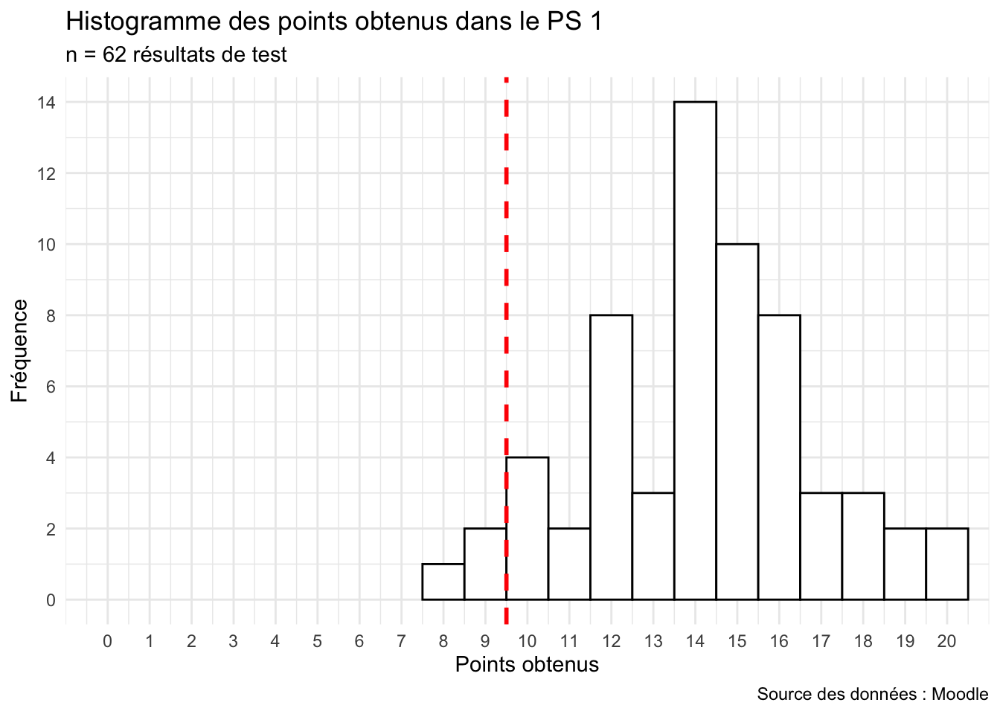
Session 4
La session 4 a pour but d’introduire trois éléments fondamentaux en analyse de données avec R :
- Installer et charger des paquets R sur son ordinateur
- Utiliser des jeux de données intégrés en R pour s’entraîner en analyse de données
- Apprendre à utiliser le paquet ggplot2 pour créer des visualisations de données
Les paquets R
À noter
Dans la programmation R, un paquet (angl. package) est un ensemble de fonctions, de données et de code compilé dans un format bien défini.
Les paquets étendent les fonctionnalités de R de base en fournissant des outils supplémentaires pour l’analyse des données, la visualisation, l’apprentissage automatique, la modélisation statistique et beaucoup d’autres applications spécialisées.
Les paquets R peuvent être développés par n’importe qui et partagés gratuitement avec d’autres (open source). Par conséquent, une grande multitude de paquets R sont disponibles.
Notez que la plupart des paquets R doit être installé séparément, normalement depuis le site Comprehensive R Archive Network (CRAN). Dans ce cours, nous nous concentrerons sur deux paquets célèbres :
ggplot2pour créer des visualisations de donnéesdplyrpour manipuler les jeux de données
Tous deux font partie du tidyverse, une collection de paquets conçus pour la science des données. Nous utiliserons également le paquet suivant :
ggthemespour augmenter le design des graphiques
Pour utiliser un paquet R sur votre ordinateur, il faut :
- D’abord installer le paquet en question avec la fonction
install.packages(). Cela peut durer quelques minutes. - Ensuite activer le paquet avec la fonction
library().
Astuce
Dans RStudio, on peut aussi installer les paquets via l’onglet Tools et le menu déroulant : Cliquez sur Install Packages… et cherchez les paquets que vous voulez installer.
Utilisez le code suivant pour installer les paquets R requis pour notre cours. Enlevez les croisillons, éxécutez le code avec install.packages() puis réajouter les croisillons pour éviter de réinstaller les paquets chaque fois que vous éxécutez le code dans votre script ! Activer ensuite les paquets avec library().
# install.packages('tidyverse')
# install.packages('ggthemes')
library(tidyverse)
library(ggthemes)À noter : ggplot2 et dplyr sont installés avec le tidyverse, il ne faut donc plus les installer séparément.
Attention
Notez qu’une fois installé, vous n’avez pas besoin de le réinstaller les paquets à chaque fois avec install.packages(). Cependant, vous devez activer tous les paquets R que vous voulez utiliser dans une session avec la commande library(). Sans activation, vous allez recevoir des messages d’erreur.
Certains paquets ont des documentations auxquelles vous pouvez accéder grâce au point d’interrogation. Ces infos sont affichés dans le volet Output sous l’onglet Help.
?ggplot2?dplyr
En ligne, vous pouvez également trouver de nombreuses ressources qui expliquent en détail les fonctionnalités des différents paquets R et vous renvoient vers d’autres livres, tutoriels, cours, etc., p. ex. :
Vous pouvez vérifier quels paquets sont actuellement installés sur votre ordinateur avec la fonction installed.packages() (vous pouvez laisser vide l’espace entre parenthèses) :
installed.packages()Les jeux de données intégrés
Une excellente façon, et probablement la plus efficace, d’apprendre à utiliser R pour l’analyse de données consiste à travailler avec des jeux de données intégrés dans R.
Ces jeux de données exemplaires présentent deux avantages principaux.
- Il est facile d’y accéder et de les charger dans votre session RStudio, car ils sont intégrés à R et à certains de ses paquets.
Cela les distingue fortement des données du “monde réel”, comme les données de questionnaires ou de médias sociaux, qu’il faut souvent d’abord nettoyer et formater, puis importer dans RStudio sous forme de fichiers externes. Avec les jeux de données intégrés, vous pouvez immédiatement commencer l’analyse et la visualisation des données.
- Ces jeux de données ont prouvé leur utilité dans d’innombrables supports d’apprentissage.
Par conséquent, vous pouvez facilement trouver des ressources supplémentaires et des exemples de code à leur sujet.
Dans ce qui suit, nous allons explorer quatre jeux de données classiques de ce type :
irismtcarsdiamondspalmerpenguins
Astuce
Vous pouvez afficher les jeux de données qui sont actuellement accéssible sur votre ordinateur avec la commande data().
le jeu de données iris
Le jeu de données iris est un ensemble de données célèbre qui contient les mesures en centimètres des variables longueur et largeur du sépale, ainsi que longueur et largeur du pétale, pour trois expèces de fleurs d’iris (Setosa, Virginica et Versicolor). Il y a 150 observations en total (50 pour chaque espèce).
Le jeu de données a été rendu célèbre par le statisticien et biologiste britannique Ronald Fisher dans un article scientifique de 1936 qui avait beaucoup d’influence dans le domaine des statistiques. Les données d’iris eux-même ont été récolté par le botaniste Edgar Anderson en 1935 sur la péninsule de Gaspésie au Québéc, Canada.
Plus sur Ronald Fisher
Ronald Fisher (1890-1962) était un statisticien, généticien et biologiste britannique qui a joué un rôle crucial dans le développement de la science statistique moderne. Il est connu pour son travail dans le développement des fondements des méthodes statistiques, incluant l’analyse de variance (ANOVA), le test exact de Fisher et l’estimation du maximum likelihood. Fisher a également apporté des contributions significatives en génétique, où son travail sur la théorie de la sélection naturelle et la génétique des populations a aidé à combler le fossé entre la génétique mendélienne et l’évolution darwinienne. Il est considéré comme l’un des architectes principaux de la synthèse néo-darwinienne. Son influence s’étend au-delà de la statistique et de la génétique aux domaines plus larges de la biologie et de la recherche agricole, faisant de lui une figure pivotale de la science du 20e siècle.

Il y a des statistiques sur trois espèces d’iris dans le jeu de données Source : wikimedia.org
{kind=link}
Dans l’apprentissage de R, ce jeu de données est souvent utilisé pour illustrer diverses techniques d’analyse de données, y compris le clustering, la classification et la visualisation.
Explorons un peu le jeu de données iris avec du code !
dim(iris) # Ceci affiche le nombre de lignes et de colonnes)
head(iris) # Affiche les six premières lignes
str(iris) # Informations sur la structure du jeu de données
names(iris) # Affiche les noms des colonnesRegardons ce que ça donne après l’éxécution de chaque ligne de code :
dim(iris)[1] 150 5head(iris) Sepal.Length Sepal.Width Petal.Length Petal.Width Species
1 5.1 3.5 1.4 0.2 setosa
2 4.9 3.0 1.4 0.2 setosa
3 4.7 3.2 1.3 0.2 setosa
4 4.6 3.1 1.5 0.2 setosa
5 5.0 3.6 1.4 0.2 setosa
6 5.4 3.9 1.7 0.4 setosastr(iris)'data.frame': 150 obs. of 5 variables:
$ Sepal.Length: num 5.1 4.9 4.7 4.6 5 5.4 4.6 5 4.4 4.9 ...
$ Sepal.Width : num 3.5 3 3.2 3.1 3.6 3.9 3.4 3.4 2.9 3.1 ...
$ Petal.Length: num 1.4 1.4 1.3 1.5 1.4 1.7 1.4 1.5 1.4 1.5 ...
$ Petal.Width : num 0.2 0.2 0.2 0.2 0.2 0.4 0.3 0.2 0.2 0.1 ...
$ Species : Factor w/ 3 levels "setosa","versicolor",..: 1 1 1 1 1 1 1 1 1 1 ...names(iris)[1] "Sepal.Length" "Sepal.Width" "Petal.Length" "Petal.Width" "Species"
Astuce
Vous pouvez consulter la documentation pour beaucoup de jeux de données avec un point d’interrogation : ?iris().
le jeu de données mtcars
Utilisez le script suivant pour analyser mtcars(lisez également la documentation avec ?mtcars) !
# Chargez le jeu de données mtcars. Il devrait apparaître
# dans l'environnement
data(mtcars)
# Affichez mtcars
mtcars
# vous pouvez explorer mtcars manuellement en double
# cliquant dessus dans l'environnement
# Affichez seulement les six premières observations
head(mtcars)
# Affichez seulement les six dernières observations
tail(mtcars)
# Appliquez quelques autres commandes pour explorer ce jeu
# de données
class(mtcars)
dim(mtcars)
str(mtcars)
summary(mtcars)
glimpse(mtcars) # cette commande marche seulement si vous avez activé le tidyverse
# Extraire la colonne mpg ('miles per gallon') avec le
# signe $ et calculer la moyenne, la médianne, le minimum
# et le maximum
mtcars$mpg
mean(mtcars$mpg)
median(mtcars$mpg)
min(mtcars$mpg)
max(mtcars$mpg)_L_2-door_sedan_(20538771443).jpg)
Un des modèles de mtcars : Le Toyota Corolla de 1974. Source : wikimedia.org
le jeu de données diamonds
C’est maintenant à vous d’explorer ce jeu de données avec du code !
Utilisez également ?diamonds() !

Qu’est-ce qui définit le prix d’un diamant ? Source : wikimedia.org
Introduction aux visualisations avec ggplot2
À noter
ggplot2, qui fait partie du tidyverse, est un paquet de visualisation de données très populaire dans R. Il a été conçu pour faciliter la création de graphiques complexes et multicouches avec une syntaxe cohérente et consistante nommée grammar of graphics.
ggplot2 est donc un acronyme formé à partir des mots grammar of graphics plots (français : grammaire des graphiques). Le “2” dans ggplot2 indique simplement la deuxième génération de ce paquet R.
Avec ggplot2, les utilisateurs peuvent construire des graphiques de manière incrémentale en ajoutant des couches, ce qui le rend flexible pour une large gamme de besoins graphiques. Cela permet de créer des visualisations hautement personnalisables et esthétiquement attrayantes, allant de simples diagrammes de dispersion à des figures multi-panneaux complexes.
Le tableau suivant décrit les couches d’un graphique ggplot :
| Couche | Déscription/Variables | Obligatoire ? |
|---|---|---|
| data | le jeu de données que nous voulons visualiser | oui |
| aesthetics | le mapping de nos variables : axes x et y, color, fill, alpha, line width, etc. | oui |
| geometries | le type visuel du graphique : point, line, histogram, bar, boxplot | oui |
| themes | Le design du graphique | non |
| Autres couches optionelles : facets, statistics, coordinates | Pour des visualisations plus complexes | non |
Pour comprendre comment cela fonctionne, voici un exemple de code dans lequel les différentes couches d’un graphique ggplot sont ajoutées étape par étape dans la fonction ggplot(). (Normalement, nous ne procéderions pas ainsi, mais utiliserions directement le code en entier pour créer le graphique).
Le but dans cet exemple est de visualiser le jeu de données diamonds pour comprendre la relation entre les variables price (prix) et carat (poids) des diamants dans le jeu de données !
À noter
Important : avant d’analyser un ensemble de données, il faut toujours acquérir des connaissances contextuelles sur ce que les données représentent.
Dans notre exemple, il s’agit de diamants. Dans le monde des diamants, il est important de comprendre qu’il existe quatre critères de qualité qui déterminent la valeur (donc le prix) d’un diamant. Ce sont les suivants :
La taille (angl. cut)
La pureté (clarity)
La couleur (color)
Le poids en carats (carat)
En anglais, on parle donc aussi des 4C. Le jeu de données diamonds contient précisément ces variables.
# La première couche, data, définit le jeu de données
ggplot(data = diamonds)
Notre graphique n‚Äôest pour l‚Äôinstant qu‚Äôune zone grise ! Catastrophe ? Bien s√ªr que non üòÄ. Nous devons maintenant d√©finir les autres param√®tres de la fonction ggplot() !
# La deuxième couche, aesthetics, définit le mapping de nos
# variables sur les axes y et x
ggplot(data = diamonds, mapping = aes(x = carat, y = price))
La zone grise a maintenant reçu des unités pour ses axes x (carat) et y (price). Mais il n’y a toujours pas de données affichées !
# La troisième couche, geometries, définit le type visuel
# de notre graphique
ggplot(data = diamonds, mapping = aes(x = carat, y = price)) +
geom_point()
Ouf, si vous avez exécuté le dernier code, vous avez maintenant 53 940 points de données affichées dans votre graphique ! Car il y a tant d’observations dans le jeu de données diamonds.
Bon courage si vous avez un vieil ordinateur, cela peut prendre un certain temps avant que R ne produise le graphique…
Mais jetons un coup d’œil au graphique. Qu’est-ce qui saute aux yeux, pouvez-vous déjà identifier des tendances ?
# On peut maintenant encore optimiser notre graphique
ggplot(data = diamonds, mapping = aes(x = carat, y = price, color = clarity)) +
geom_point()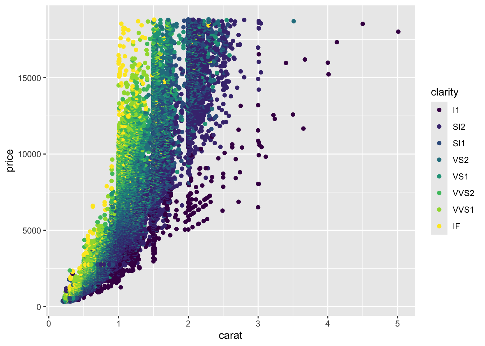
Vous avez remarqué ce qui a changé dans le code ?
# Ajoutons encore une couche optionnelle mais utile au
# graphique : labs() nous permet d'ajouter et de
# personnaliser des titres, sout-titres, titre d'axes,
# titres de légendes, etc. !
ggplot(data = diamonds, mapping = aes(x = carat, y = price, color = clarity)) +
geom_point() + labs(title = "La relation entre prix et carat des diamants",
subtitle = "n = 53 940 diamants", y = "Prix", x = "Carat",
colour = "Pureté")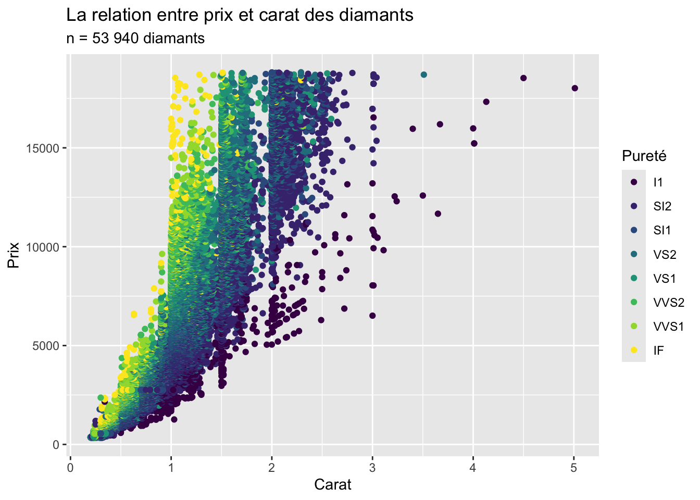
Maintenant il s’agit d’interpréter le graphique. Que nous dit-il sur la relation entre prix et carats des diamants ? Quel rôle joue la variable pureté (clarity)?
Devoir pour Session 5
Exécutez toutes les sections de code de la session 4 sur votre ordinateur.
Entraînez-vous à ouvrir un nouveau script R, à définir un répertoire de travail et à enregistrer le script dans un dossier sur votre ordinateur.
Assurez-vous que le paquet R
tidyverseest installé correctement sur votre ordinateur.Utilisez le code R de manière autonome pour explorer le jeu de données
diamonds. Vous devez être en mesure de comprendre et d’expliquer comment il est structuré (nombre d’observations n, unité statistique, variables, origine des données, etc).
Session 5
La session 5 a pour but d’approfondir les techniques de visualisation de données avec le paquet ggplot2, notamment la création des types de graphique suivants :
- Les nuages de points (angl. scatter plots)
- Les diagrammes à barres (angl. bar plots)
- Les histogrammes (angl. histograms)
- Les boîtes à moustaches (angl. box plots)
# N'oubliez pas de charger les paquets tidyverse et
# ggthemes ! Exécutez le code suivant pour le faire :
library(tidyverse)
library(ggthemes)1. Les nuages de points (angl. scatter plots)
Commençons par le nuage de points, que nous avons déjà vu lors de la dernière session, lorsque nous avons visualisé la relation entre les carats et les prix dans le jeu de données diamonds.
À noter
Un nuage de points (aussi appelé diagramme de dispersion) est utilisé dans ggplot2 pour représenter les valeurs de deux variables numériques différentes par des points, avec une variable sur l’axe des X et l’autre sur l’axe des Y.
Ce type de graphique est idéal pour l’analyse exploratoire de données, permettant d’observer les relations entre les variables, de détecter des tendances, des regroupements, des valeurs êxtremes (angl. outliers) ou de vérifier des hypothèses de corrélation.
Dans la fonction ggplot(), un scatter plot est créé avec la couche géométrique geom_point().
Créons un nuage de points avec le jeu de données iris, en comparant les longueurs et les largeurs des sépales des iris (les variables Sepal.Length et Sepal.Width).
Notez que, dans le code suivant, nous ne créons pas directement un graphique ggplot mais nous stockons le graphique comme un objet dans l’environnement, nommé p1, que nous pouvons ensuite afficher avec la fonction print(). Nous verrons dans un instant pourquoi cette pratique est utile.
# nuage de points basique pour comparer la longueur et la
# largeur des sépales des iris
np1 <- ggplot(data = iris, mapping = aes(x = Sepal.Length, y = Sepal.Width)) +
geom_point() + labs(title = "Sepal length and width in the iris dataset")
print(np1)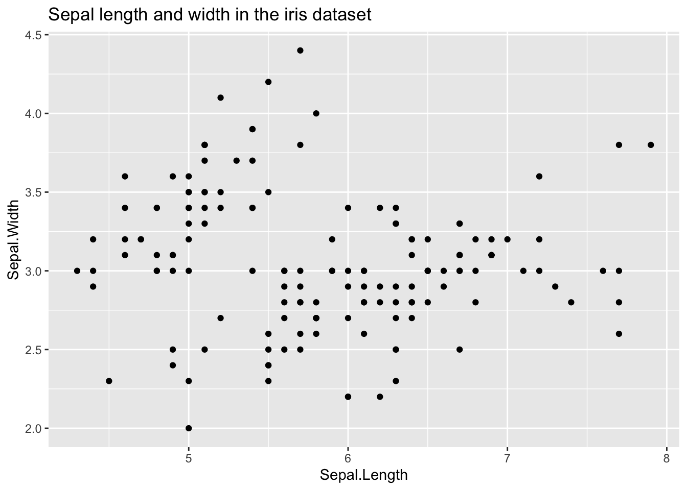
Nous pouvons ajouter des couches à l’objet np1 sans l’écraser, p. ex. une ligne de régression linéaire avec geom_smooth(method = lm) :
np1 + geom_smooth(method = lm)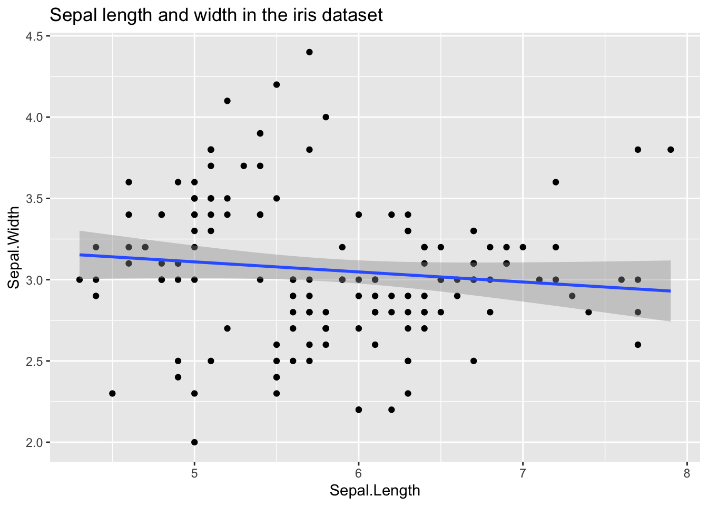
Que nous indique la ligne de régression ? En principe, elle indique une correlation légèrement négative entre les variables Sepal.Lengthet Sepal.Width ! (la zone grise autour de la ligne bleue indique une marge d’erreur).
Cela signifie que les iris dont les sépales sont plus longs ont tendance à avoir des sépales un peu moins larges ! Gardez cette constatation à l’esprit pour les étapes de codage suivantes.
# Ecrasons np1 en changeant un peu le code. Découvrez
# vous-même ce qui a changé dans le code !
np1 <- ggplot(iris, aes(x = Sepal.Length, y = Sepal.Width, color = Species)) +
geom_point() + labs(title = "Sepal length and width in the iris dataset")
print(np1)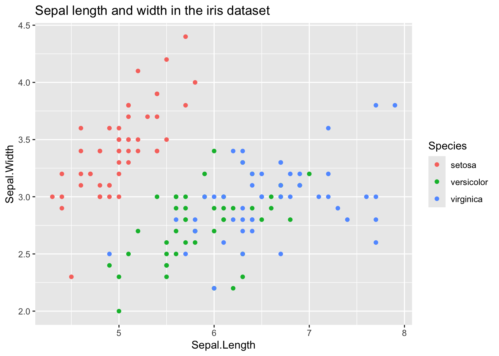
Vous pouvez voir dans le graphique que nous pouvons maintenant différencier les trois espèces d’iris. La dispersion des points semble moins aléatoire, ce qui permet de voir des groupes de points appartenant à l’une ou l’autre espèce (angl. cluster).
Maintenant, ajoutons à nouveau une couche geom_smooth() à l’objet np1 !
np1 + geom_smooth(method = lm)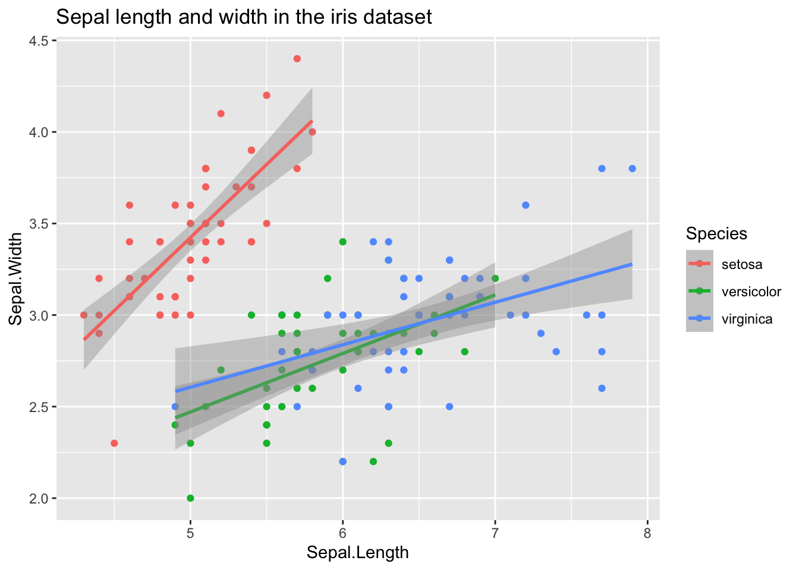
Les trois lignes de régression (une pour chaque type d’iris) montrent maintenant un tout autre résultat : en effet, la corrélation entre Sepal.Length et Sepal.Width est clairement positive.
Cette constatation est un exemple d’analyse exploratoire des données, rendue possible par les possibilités de visualisation de ggplot2.
2. Les diagrammes à barres
À noter
Les diagrammes à barres dans R avec ggplot2 sont utilisés pour représenter visuellement des données catégorielles, permettant de comparer des quantités entre différentes catégories.
On les utilise donc souvent pour montrer la fréquence ou la proportion d’observations dans chaque catégorie, ce qui les rend utiles pour analyser des tendances ou des différences au sein de données catégorielles.
Dans la fonction ggplot(), un diagramme à barres est créé avec la couche géométrique geom_bar().
Par exemple, nous pouvons utiliser le code simple suivant pour comparer la fréquence des différentes tailles (angl. cut) dans le jeu de données diamonds. Cette-fois ci, nous sauvegardons et nommons le graphique db1.
db1 <- ggplot(data = diamonds, mapping = aes(x = cut)) + geom_bar()
print(db1)
Améliorons le graphique avec des paramètres et des couches supplémentaires de la fonction ggplot() (Notez que nous allons simplement écraser l’objet db1 créé précédemment avec une nouvelle version de db1 !) :
library(ggthemes)
db1 <- ggplot(data = diamonds, mapping = aes(x = cut, fill = cut)) +
geom_bar() + labs(title = "Frequency of cut quality types in the diamonds dataset",
subtitle = "n = 53,940 diamonds", x = "Cut Quality", y = "Count") +
theme_minimal()
print(db1)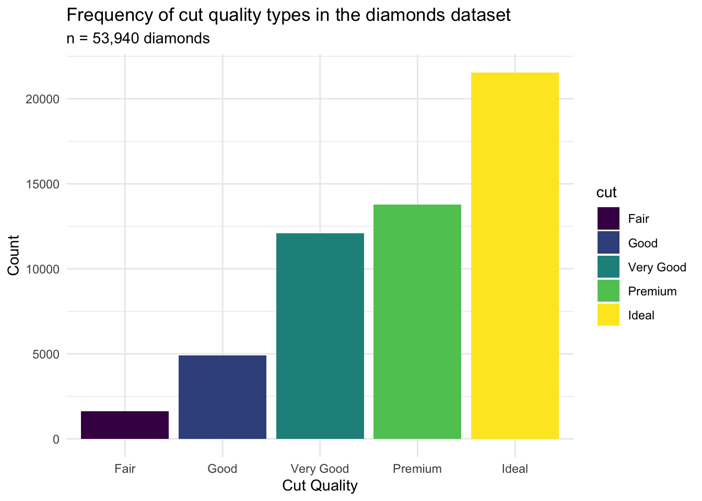
Que nous dit le graphique ? Il est intéressant de constater que dans le jeu de données diamonds, le niveau de qualité le plus élevé de la taille, à savoir ideal, est également le plus fréquent.
Attention
Dans la fonction ggplot(), il y a une différence si vous voulez ajouter de la couleur aux points (qui ont mathématiquement zéro dimension) ou aux surfaces (qui ont deux dimensions), comme dans les diagrammes à barres.
Si vous voulez ajouter de la couleur à une surface, vous devez utiliser l’argument fill = "xyz". L’argument color = "xyz" que nous avons utilisé pour ajouter de la couleur aux nuages de points ne fera qu’ajouter de la couleur à la ligne autour de la surface !
C’est maintenant à vous de jouer !
Reprenez le code que nous avons utilisé pour créer db1 et modifiez-le pour créer un nouvel objet,db2, qui visualise la fréquence des types de qualité de couleur (color) dans le jeu de données diamonds sous la forme d’un diagramme à barres !
3. Les histogrammes
À noter
Un histogramme est un type de graphique utilisé pour représenter la distribution d’une variable numérique à travers des barres.
Un “histogramme sépare les valeurs possibles des données en classes ou groupes. Pour chaque groupe, on construit un rectangle dont la base correspond aux valeurs de ce groupe et la hauteur correspond au nombre d’observations dans le groupe.
L’histogramme a une apparence semblable au graphique à barres verticales, mais il n’y a pas d’écart entre les barres.
En règle générale, l’histogramme possède des barres d’une largeur égale” (Source : Statistique Canada, 2021).
L’histogramme est particulièrement utile pour :
- Analyser la distribution : Comprendre si les données sont normalement distribuées, asymmétriques (angl. skewness), ou si elles présentent un plateau (kurtosis).
- Détecter les valeurs extrêmes : Identifier les données qui s’écartent du reste de l’ensemble des données de manière signifiante.
- Comparer des distributions : Observer comment différentes sous-populations se comparent les unes aux autres en termes de distribution de données.
Avec ggplot2 en R, créer un histogramme se fait avec la couche géometrique geom_histogram(). ggplot2 calcule automatiquement la taille des intervalles (angl. bins) par défaut, mais cela peut être ajusté manuellement en spécifiant l’argument binwidth = xyzdans la fonction geom_histogram(), p. ex. geom_histogram(binwidth = 30).
Avant de créer un histogramme avec le code R, introduisons d’abord une nouvelle fonction : rnorm(). Elle peut être utilisée pour créer des valeurs aléatoires qui suivent une loi normale (angl. normal distribution).
Les arguments que nous pouvons entrer dans la fonction sont :
le nombre
nde valeurs aléatoires que nous voulons créerla moyenne
meande la distribution des valeurs aléatoiresl’écart-type
sdde la distribution des valeurs aléatoires
Notez que par défaut, la fonction utilise mean = 0 et sd = 1, ce qui correspond à une loi normale centrée réduite (angl. standard normal distribution).
Utilisez aussi ?rnorm()pour accéder à plus d’infos.
Dans le code R suivant, nous utilisons rnorm() pour simuler les distributions des tailles des hommes et des femmes en Suisse.
Selon un article de 24 heures, en Suisse, les femmes ont une taille moyenne de 164.7 cm tandis que les hommes mesurent 177.4 cm en moyenne. Dans la suite, nous supposons que les écarts-types sont de +- 5.6 cm pour les femmes et de +- 6.1 cm pour les hommes.
# Simulation de tailles de femmes en Suisse Créer 500
# valeurs aléatoires de taille (moyenne = 164.7 et
# écart-type = 5.6) avec la fonction rnorm().
taille_f <- rnorm(500, mean = 164.7, sd = 5.6)
head(taille_f)[1] 156.1311 160.8612 167.7112 164.9746 169.7221 164.9807# stocker taille_f comme objet de type 'data.frame'
taille_f <- as.data.frame(taille_f)
# visualiser taille_f avec un histogramme basique
ggplot(data = taille_f, mapping = aes(x = taille_f)) + geom_histogram()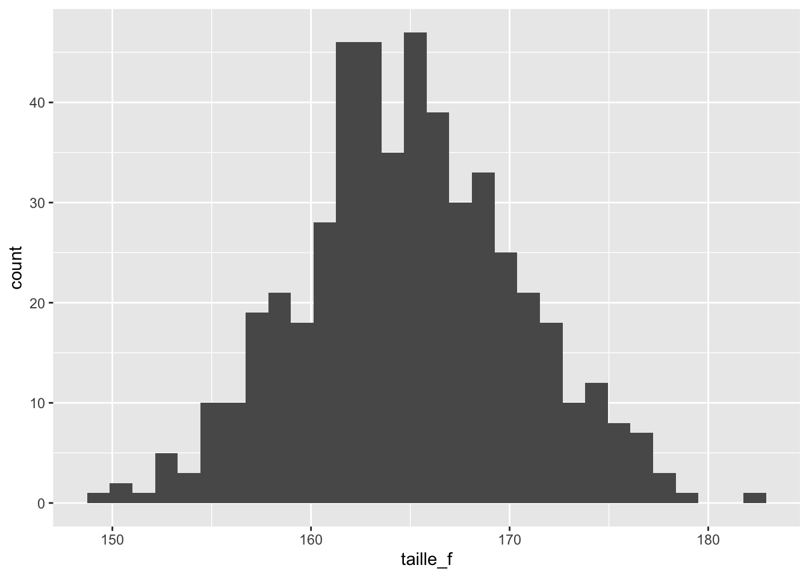
# jouer avec le paramètre 'binwidth' de l'histogramme qui
# définit l'intervalle de la base de ses barres
ggplot(data = taille_f, mapping = aes(x = taille_f)) + geom_histogram(binwidth = 10)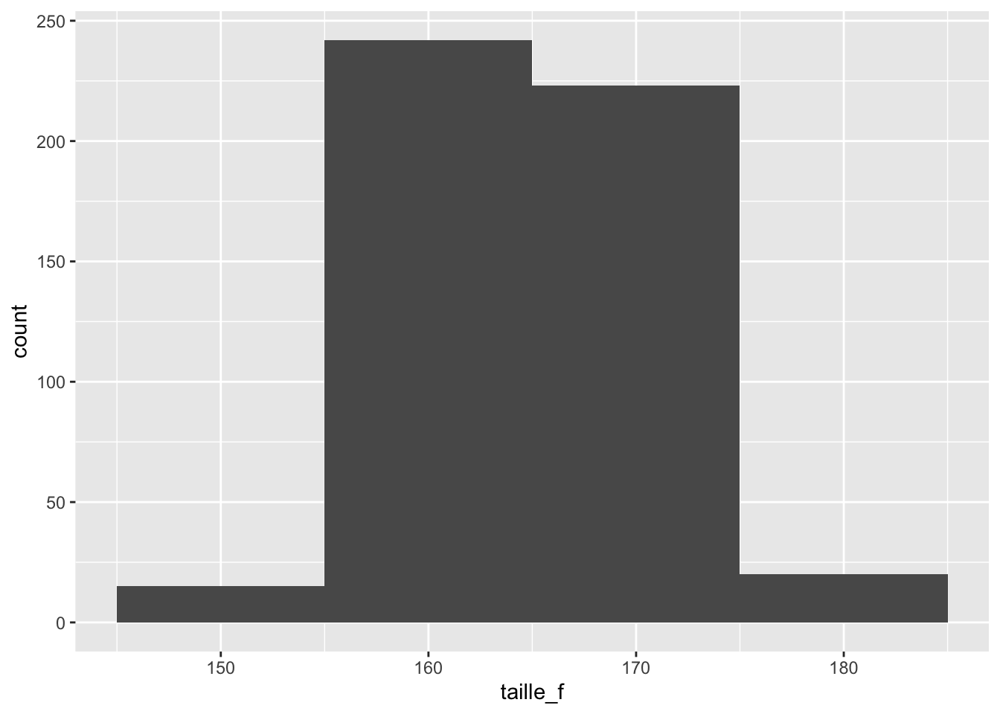
ggplot(data = taille_f, mapping = aes(x = taille_f)) + geom_histogram(binwidth = 0.1)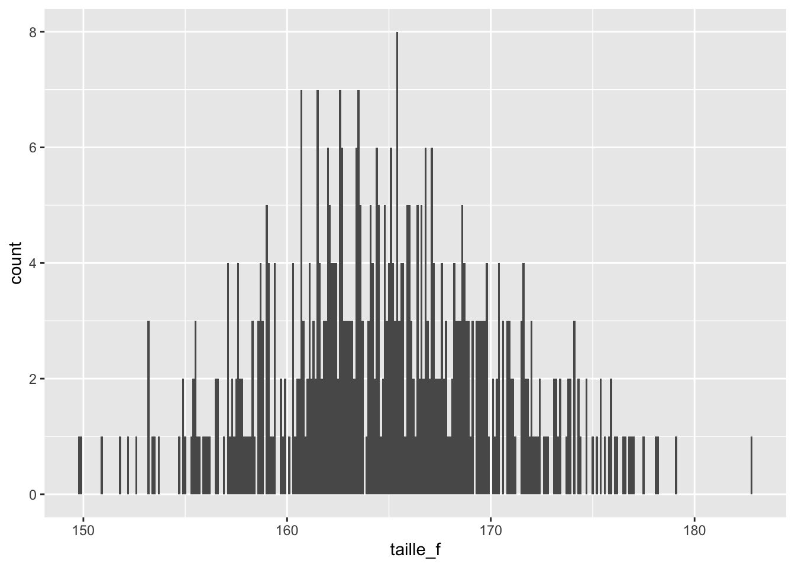
ggplot(data = taille_f, mapping = aes(x = taille_f)) + geom_histogram(binwidth = 1)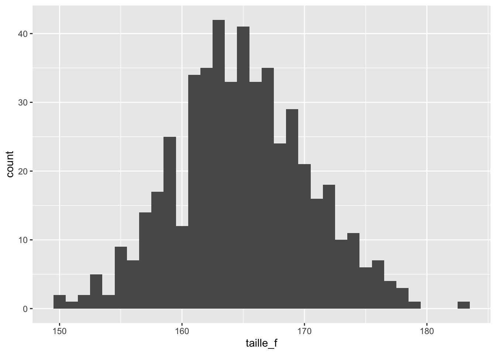
# stocker l'histogramme comme objet, nommé hist1, et
# modifier sa couleur
hist1 <- ggplot(data = taille_f, mapping = aes(x = taille_f)) +
geom_histogram(binwidth = 1, color = "black", fill = "white")
print(hist1)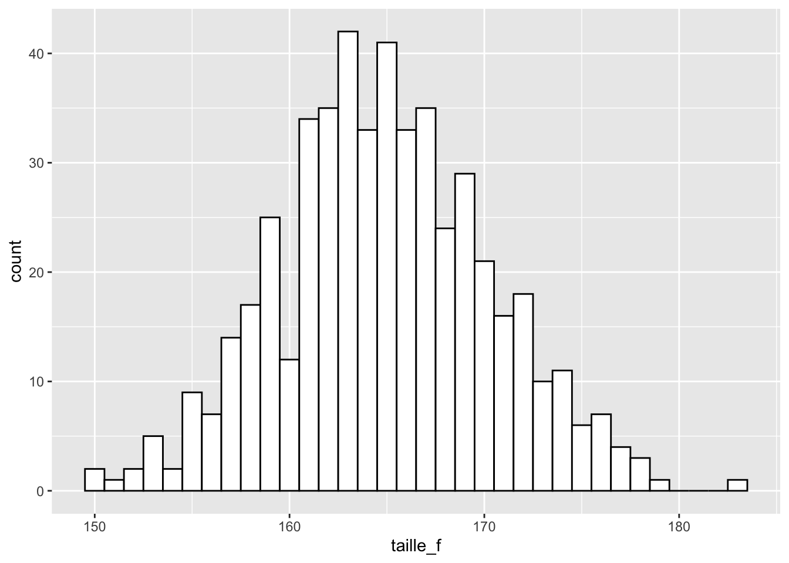
# Ajouter des couches supplémentaires pour améliorer la
# visualisation p. ex. des titres
hist1 <- hist1 + labs(title = "Histogramme des tailles de femmes en Suisse",
subtitle = "Simulation basée sur 500 observations", x = "Taille en cm",
y = "Fréquence") + theme_bw()
print(hist1)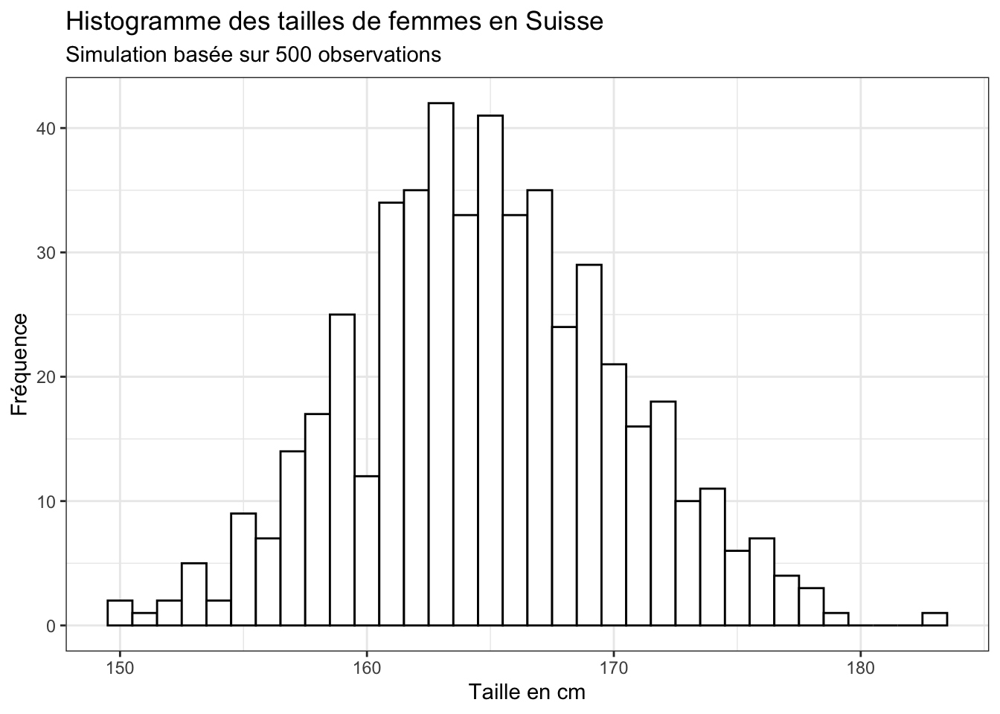
Astuce
Un élément clé des visualisations de données est la couleur. Le document PDF suivant, créé par Ying Wei de l’Université de Columbia à New York, montre et liste les noms des couleurs dans R. Vous pouvez copier-coller le nom d’une couleur et l’utiliser dans votre graphique ggplot2 !
C’est maintenant à vous de jouer !
Reprenez le code que nous avons utilisé pour créer taille_f et hist1 et modifiez-le pour créer une nouvelle simulation de taille d’hommes, taille_h, et un nouveau histogramme qui montre sa distribution, hist2. Jouez avec les paramètres binwidthet la couleur de votre visualisation. Pour cette tâche, vous pouvez supposer que les hommes en Suisse ont une taille moyenne (mean) de 177,4 cm avec un écart-type (sd) de 6,1 cm.
4. Les boîtes à moustaches (angl. boxplots)
À noter
Les boîtes à moustaches, ou boxplots, sont un type de graphique pour représenter la distribution d’un ensemble de données à travers cinq mesures clés :
- le minimum (début de la “moustache” ou point extrême de minimum)
- le premier quartile (Q1 ; début de la boîte)
- la médiane (Q2 ; ligne qui “coupe la boîte en deux”)
- le troisième quartile (Q3 ; fin de la boîte) et
- le maximum (fin de la moustache ou point extrême de maximum)
Ces diagrammes permettent d’identifier rapidement la médiane, l’étendue interquartile (angl. interquartile range = IQR) et les valeurs êxtremes potentielles. Ils sont particulièrement utiles pour comparer les distributions entre plusieurs groupes ou variables.
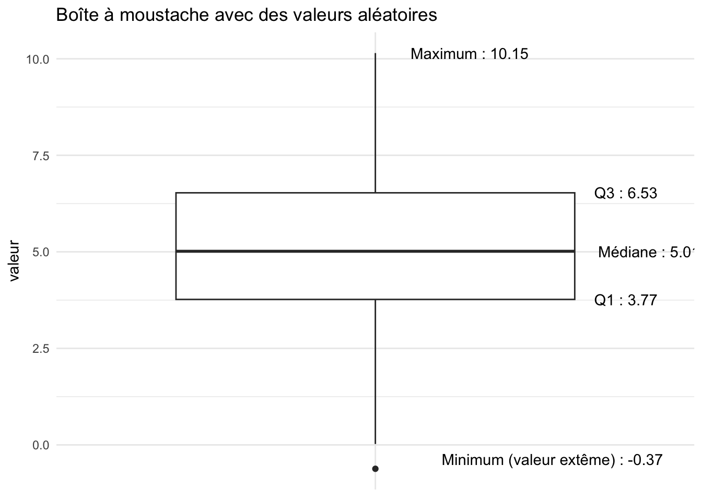
Le dataset mtcars en R, qui contient des données sur les caractéristiques de différents modèles de voitures, peut être utilisé pour illustrer l’utilisation de boxplots.
Par exemple, pour visualiser la distribution de la consommation de carburant (mpg) des voitures en fonction du nombre de cylindres (cyl), on peut utiliser le code suivant :
# Avant de créer le boxplot, vérifions d'abord la structure
# de mtcars :
str(mtcars)'data.frame': 32 obs. of 11 variables:
$ mpg : num 21 21 22.8 21.4 18.7 18.1 14.3 24.4 22.8 19.2 ...
$ cyl : num 6 6 4 6 8 6 8 4 4 6 ...
$ disp: num 160 160 108 258 360 ...
$ hp : num 110 110 93 110 175 105 245 62 95 123 ...
$ drat: num 3.9 3.9 3.85 3.08 3.15 2.76 3.21 3.69 3.92 3.92 ...
$ wt : num 2.62 2.88 2.32 3.21 3.44 ...
$ qsec: num 16.5 17 18.6 19.4 17 ...
$ vs : num 0 0 1 1 0 1 0 1 1 1 ...
$ am : num 1 1 1 0 0 0 0 0 0 0 ...
$ gear: num 4 4 4 3 3 3 3 4 4 4 ...
$ carb: num 4 4 1 1 2 1 4 2 2 4 ...Nous pouvons constater que la colonne cyl (cylindre) est stockée au format numérique.
C’est un problème, car nous voulons comparer la consommation de carburant des voitures à 4, 6 ou 8 cylindres. Nous devons traiter chacune d’entre elles comme un sous-groupe distinct. Comment faire ?
# Transformons donc cyl en facteur
mtcars$cyl <- as.factor(mtcars$cyl)
# Et maintenant nous pouvons construire notre boxplot
box1 <- ggplot(data = mtcars, aes(x = cyl, y = mpg, fill = cyl)) +
geom_boxplot(alpha = 0.2) + labs(title = "Consommation de carburant (mpg) par nombre de cylindres dans mtcars",
x = "Nombre de cylindres", y = "Miles per gallon (mpg)")
print(box1)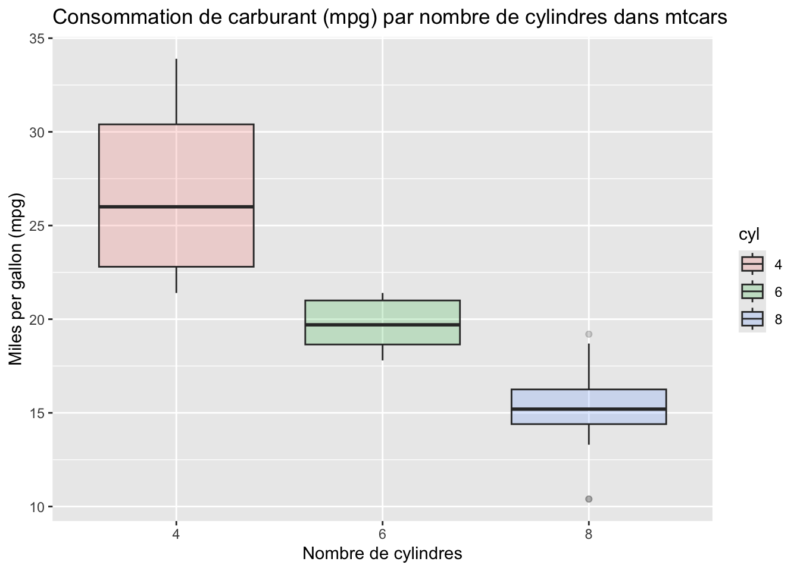
Ce code génère un boxplot, box1, pour chaque groupe de cylindres dans le dataset mtcars, permettant de comparer facilement la consommation de carburant entre les voitures avec un différents nombres de cylindres.
À noter
Le paramètre alpha = 0.2 à l’intérieur de geom_boxplot() rend les boxplots transparents. En général, alpha peut être compris entre 0 (totalement transparent) et 1 (non transparent). C’est un paramètre supplémentaire qui permet de personnaliser votre graphique ggplot2.
On voit dans le graphique des boxplots que dans mtcars, les voitures avec des moteurs ayant plus de cylindres ont aussi tendance à être moins efficaces en termes de consommation de carburant. Il existe toutefois quelques intersections entre les groupes. C’est-à-dire qu’il y a des voitures à 8 cylindres qui sont relativement efficaces en termes de consommation de carburant, surpassant quelques voitures à 6 cylindres, par exemple.
Devoir pour Session 6 (Problem Set 2)
Problem Set 2
Comme le premier Problem Set, le Problem Set 2 est un QCM sur Moodle qui sera accessible pendant 30 minutes du créneau horaire de votre groupe de l’exercice.
Assurez-vous que R et RStudio fonctionnent sur votre ordinateur portable et qu’il a suffisamment de batterie. Il est de votre responsabilité de vous en assurer.
Le Problem Set 2 concernera principalement le contenu des sessions 4 et 5, à savoir la visualisation de données avec ggplot2.
Les bases de R qui ont été traitées dans les premières sessions, comme par exemple la création et l’écrasement d’objets avec l’opérateur d’affectation
<-, sont toutefois requises, car la matière se fonde sur ces bases. Veuillez combler vous-même les éventuelles lacunes à ce sujet.
Annonce : Questionnaire
Nous allons évaluer un questionnaire sur votre comportement d’utilisation des médias avec R comme autre élément important du cours.
Le questionnaire est anonyme (même pour l’enseignant) et peut être rempli en ligne via LimeSurvey jusqu’au vendredi 19 avril 2024 à 23h59.
Tous les étudiant.es recevront prochainement un lien personnel d’invitation au questionnaire par e-mail (les réponses seront anonymisées et mélangées par le logiciel, l’enseignant ne verra que si les personnes invitées ont répondu au questionnaire avant la date limite).
Chaque étudiant(e) qui aura rempli le questionnaire dans les délais recevra un bonus de 2 points dans le Problem Set 4 (10% des points).
Session 6 (Problem Set 2)
Les résultats du Problem Set 2 (bonnes réponses, échelle des notes) sont accéssibles sur la page Moodle de l’exercice.
Voici l’histogramme des points obtenus par n = 82 étudiant.es qui ont participé au Problem Set 2.
Le nombre maximal de points était de 20, il fallait 10 pour passer le test.
La moyenne des points obtenus était de 12.5 (note = 4.5).
71 étudiant.es (86%) ont réussi Problem Set 2.
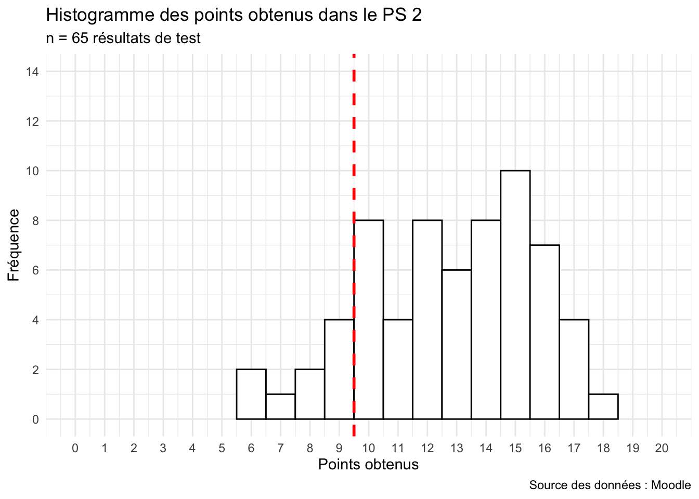
Session 7
Sujet : Manipuler les données (partie 1)
Le premier but de cette session est d’apprendre à importer des données dans RStudio à partir de fichier CSV et de les stocker en forme de data frame (format tabulaire).
Le deuxième but est de se familiariser avec dplyr (prononcé “dee-ply-er” en anglais), un paquet du tidyverse conçu pour manipuler les données en forme de data frame.
Contrairement aux jeux de données intégrés à R (tels que diamonds, etc.), la plupart des jeux de données du monde réel nécessitent des transformations avant de pouvoir être analysés et visualisés. À cette fin, nous examinerons également certaines transformations de types de variables et un nouvel opérateur, le %>% (angl. “pipe”; trad. franç. “tuyau”), qui est très utile pour les manipulations de données.
Lire des données dans RStudio
Par la suite, nous alons appliquer ces verbes avec un jeu de données concret, un fichier CSV nommé igposts.csv, qui contient des posts Instagram de célébritées qui ont reçu beaucoup d’interactions d’utilisateurs. Pour y arriver, il faut charger ce jeu de données dans notre session RStudio en cours.
À noter
Un fichier de type CSV (angl. comma-separated values) est un format textuel simple pour sauvegarder des données en forme de tableau, c’est à dire avec des valeurs organisé par lignes et colonnes et séparées par virgules.
Le format CSV présente l’avantage d’être assez léger et compatible avec tous les systèmes d’exploitation. En outre, il est utile pour stocker des données quantitatives en sciences sociales, qui se présentent souvent sous forme de tableaux.
Voici un exemple de format CSV simple :
nom, prénom, âge
Leclerc, Antoine, 53
Gomez, Hugo, 25
Nguyen, Laetitia, 19
Que nous pouvons afficher comme tableau (à noter que la première ligne désigne les noms des colonnes) :
| nom | prénom | âge |
|---|---|---|
| Leclerc | Antoine | 53 |
| Gomez | Hugo | 25 |
| Nguyen | Laetitia | 19 |
Avant l‚Äôimportation de fichier CSV dans RStudio (et comme d√©j√† vu pleins de fois dans le cours üòâ), il faut d‚Äôabord charger les paquets n√©cessaire avec library() et d√©finir son r√©p√©rtoire de travail (vous devez adapter les param√®tres de setwd() pour qu‚Äôil marche sur votre ordinateur) :
library(tidyverse)
setwd("/Users/domus_julian/Documents/GitHub/intro-a-R/code")Pour charger le jeu de données igposts.csv dans RStudio, vous pouvez suivre le processus suivant :
Vous téléchargez le fichier
igposts.csvdepuis le site Moodle du cours (voir matériel de la 7e session).Stockez le fichier
igposts.csvdans le dossier que vous avez définit comme répértoire de travail.Ensuite, vous utilisez le menu intéractif dans RStudio : File -> Import Dataset -> From Text (base)… et choisissez
igposts.csv.Une fenêtre avec des paramètre apparait, que vous pouvez remplir de la manière suivante :
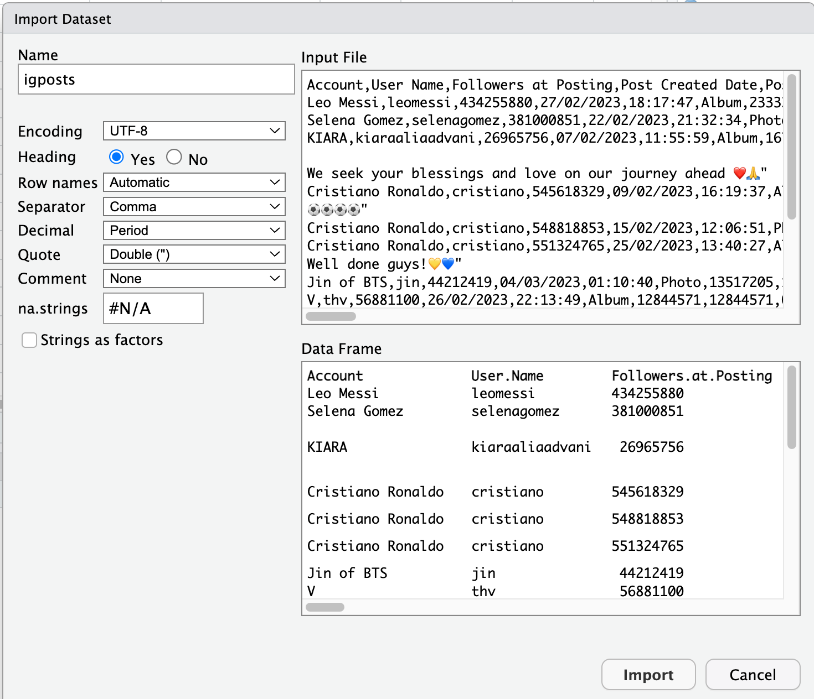
Explications des paramètres :
Encoding = UTF-8 : Indique à RStudio d’utiliser l’encodage de caractères UTF-8 (qui est un standard très répandu), ce qui est important pour lire correctement toutes les lettres (notamment les caractères avec des accents : é, ä, ê, etc.).
Heading = YES : Indique à RStudio que la première ligne du fichier CSV contient les noms des colonnes.
Separator = Comma : Indique à RStudio que les valeurs du tableau sont séparées par des virgules (attention, certains documents francophones utilisent le point-virgule ( ;) à la place de la virgule).
Decimal = Period : Indique à RStudio que le point (.) est utilisé pour les décimales (et non la virgule comme souvent dans les documents en français).
na.strings = #N/A : Indique à RStudio que les cellules vides dans le tableau sont désignées par #N/A (cela peut être différent dans d’autres fichiers CSV).
Finalement, vous pouvez copier et coller le code qui apparaît dans la console dans votre script R pour facilement recharger le fichier CSV ultérieurement.
# Par exemple, pour l'ordinateur de l'enseignant, ce code
# est le suivant :
igposts <- read.csv("/Users/domus_julian/Documents/GitHub/intro-a-R/code/igposts.csv",
encoding = "UTF-8", na.strings = "#N/A")
# Si tout a bien marché, l'objet igposts devrait apparaître
# dans votre environnement Nous pouvons afficher la
# structure de igposts pour une première impression :
str(igposts)'data.frame': 100 obs. of 12 variables:
$ Account : chr "Leo Messi" "Selena Gomez" "KIARA" "Cristiano Ronaldo" ...
$ User.Name : chr "leomessi" "selenagomez" "kiaraaliaadvani" "cristiano" ...
$ Followers.at.Posting: int 434255880 381000851 26965756 545618329 548818853 551324765 44212419 56881100 390981561 547708976 ...
$ Post.Created.Date : chr "27/02/2023" "22/02/2023" "07/02/2023" "09/02/2023" ...
$ Post.Created.Time : chr "18:17:47" "21:32:34" "11:55:59" "16:19:37" ...
$ Type : chr "Album" "Photo" "Album" "Album" ...
$ Total.Interactions : int 23333227 20020533 16776082 16501407 14683868 14619124 13517205 12844571 12661694 12639004 ...
$ Likes : int 23075849 19760862 16554530 16317762 14603158 14489506 13517204 12844571 12589553 12558961 ...
$ Comments : int 257378 259671 221552 183645 80710 129618 1 0 72141 80043 ...
$ Views : int 0 0 0 0 0 0 0 10998354 5648190 0 ...
$ URL : chr "https://www.instagram.com/p/CpLxnFlNJZn/" "https://www.instagram.com/p/Co_P7YgrrFO/" "https://www.instagram.com/p/CoXmBSLvj7A/" "https://www.instagram.com/p/CodNx8BL1-X/" ...
$ Description : chr "Gracias a todos los que hicieron posible que ganara este premio. A todos los de la @afaseleccion, a mi familia "| __truncated__ "I deleted this one time because I thought maybe it was too much but eh (taking a break from social)" "‚ÄúAb humari permanent booking hogayi hai‚Äù \n\nWe seek your blessings and love on our journey ahead ‚ù§Ô∏èüôè" "Great feeling to have scored 4 goals and reaching my 500th league goal in a very solid win by the team!üí™üèº\n‚öΩÔ∏è‚öΩÔ∏è‚öΩÔ∏è‚öΩÔ∏è" ...Cela nous montre qu‚Äôil s‚Äôagit d‚Äôun data frame avec 100 observations et 12 variables. Chaque ligne repr√©sente un post Instagram d‚Äôune c√©l√©brit√© (unit√© statistique) et chaque colonnes une variable diff√©rente associ√© √† ce post.
Notez que les variables sont soit de type textuel (chr = “character”; p. ex. Account= le nom du compte Insta qui a publié le post), soit numérique (int = “integer”; p. ex. Total.Interactions = la somme des Likeset Comments qu’un post a reçu).
Vous pouvez aussi cliquer sur l’objet et explorer le tableau manuellement pour le comprendre d’avantage (comme nous l’avons fait avec mtcars, etc.).
Attention
Vous ne devez pas ouvrir les fichiers CSV avec des autres logiciels avant de les importer dans RStudio (par ex. avec Excel), car cela a souvent pour conséquence de modifier automatiquement le format du fichier CSV, ce qui entraîne ensuite des erreurs.
Vous devriez enregistrer le fichier CSV directement dans votre répertoire de travail sans l’ouvrir, puis l’importer dans RStudio à l’aide du menu interactif.
Vous devriez également éviter d’ouvrir le fichier CSV avec des applications ou autres (p. ex. application Moodle), ce qui peut également entraîner des erreurs.
Il est préférable de télécharger les fichiers CSV avec des navigateurs standard tels que Chrome ou Safari.
Avant de continuer avec dplyr, regardons encore deux éléments cruciales pour la manipulation de données avec R :
la transformation du types de variable (p. ex. de variables textuelles en facteurs)
L’opérateur
%>%(angl. “pipe”; trad. française “tuyau”)
La transformation du type de variable
Lorsque l’on analyse des jeux de données, on constate parfois que toutes les variables ne sont pas enregistrées dans un format utile pour l’analyse. Parfois, par exemple, les valeurs numériques sont enregistrées sous forme de texte. Il est alors utile de les transformer dans un format numérique (par exemple avec la fonction as.numeric().
Mais il y a aussi le cas suivant : les variables sous forme de texte ne représentent pas simplement des textes, mais certaines catégories. Dans ce cas, il est judicieux de les transformer en une variable catégorielle, c’est-à-dire un facteur, à l’aide de la fonction as.factor().
Dans notre exemple de jeu de données igposts, qui contient des métriques sur les posts Instagram, nous pouvons justement constater cela. Certes, certaines variables textuelles, telles que URL (le lien vers le post) et Description (le message textuel associé au post Instagram), sont tout à fait pertinentes. D’autres, en revanche, sont des catégories. La plus évidente est la variable Type, qui indique si un post Instagram est une photo, une vidéo ou un album. Factorisons ci-dessous quelques-unes de ces variables catégorielles à l’aide de code :
# Transformons les colonnes 'Account', 'User.Name' et
# 'Type' en facteurs :
igposts$Account <- as.factor(igposts$Account)
igposts$User.Name <- as.factor(igposts$User.Name)
igposts$Type <- as.factor(igposts$Type)
# Vérifier, si ça a marché :
str(igposts)'data.frame': 100 obs. of 12 variables:
$ Account : Factor w/ 38 levels "Anastasia Karanikolaou",..: 24 31 21 7 7 7 16 35 31 7 ...
$ User.Name : Factor w/ 38 levels "agustd","arianagrande",..: 24 30 21 7 7 7 16 35 30 7 ...
$ Followers.at.Posting: int 434255880 381000851 26965756 545618329 548818853 551324765 44212419 56881100 390981561 547708976 ...
$ Post.Created.Date : chr "27/02/2023" "22/02/2023" "07/02/2023" "09/02/2023" ...
$ Post.Created.Time : chr "18:17:47" "21:32:34" "11:55:59" "16:19:37" ...
$ Type : Factor w/ 2 levels "Album","Photo": 1 2 1 1 2 1 2 1 1 2 ...
$ Total.Interactions : int 23333227 20020533 16776082 16501407 14683868 14619124 13517205 12844571 12661694 12639004 ...
$ Likes : int 23075849 19760862 16554530 16317762 14603158 14489506 13517204 12844571 12589553 12558961 ...
$ Comments : int 257378 259671 221552 183645 80710 129618 1 0 72141 80043 ...
$ Views : int 0 0 0 0 0 0 0 10998354 5648190 0 ...
$ URL : chr "https://www.instagram.com/p/CpLxnFlNJZn/" "https://www.instagram.com/p/Co_P7YgrrFO/" "https://www.instagram.com/p/CoXmBSLvj7A/" "https://www.instagram.com/p/CodNx8BL1-X/" ...
$ Description : chr "Gracias a todos los que hicieron posible que ganara este premio. A todos los de la @afaseleccion, a mi familia "| __truncated__ "I deleted this one time because I thought maybe it was too much but eh (taking a break from social)" "‚ÄúAb humari permanent booking hogayi hai‚Äù \n\nWe seek your blessings and love on our journey ahead ‚ù§Ô∏èüôè" "Great feeling to have scored 4 goals and reaching my 500th league goal in a very solid win by the team!üí™üèº\n‚öΩÔ∏è‚öΩÔ∏è‚öΩÔ∏è‚öΩÔ∏è" ...Nous allons voir par la suite, pourquoi ces factorisations sont utiles.
L’opérateur %>%
La fonction principale du pipe %>% : construire une séquence de fonctions (“un tuyau”) qui est plus facile à comprendre et a lire dans le code.
# Par exemple, regardez la fonction suivante : quel est le
# problème ?
log(sqrt(mean(c(1:100))))[1] 1.960987# Le problème est que cette fonction est imbriquée et, à
# cause de cela, difficile à lire
# Avec le pipe, nous pouvons reécrire cette fonction comme
# ça et obtenir le même résultat après exécution du code :
c(1:100) %>%
mean() %>%
sqrt() %>%
log()[1] 1.960987
Astuce
Vous pouvez créer le pipe %>% avec les raccourcis clavier suivants :
Sur Windows : Control + Shift + M
Sur MacOS : Command + Shift + M
De plus, vous pouvez aussi utiliser |> comme opérateur pipe altérnatif (équivalent à %>%).
Vous pouvez déjà constater que travailler avec des jeux de données du monde réel, tels que le jeu de données Instagram igposts, nécessite un travail préparatoire substantiel. Mais rassurez-vous et ne vous découragez pas, plus vous pratiquez, plus cela devient facile et, bientôt, vous serez en mesure de charger facilement des ensembles de données dans RStudio ! Par ailleurs : il est normal de rencontrer des messages d’erreur. C’est une partie essentielle du processus d’apprentissage que de les surmonter en bricolant et en jouant avec vos données jusqu’à ce que vous puissiez les faire fonctionner.
Après avoir chargé notre fichier CSV dans RStudio, appliqué des transformations et notre connaissance de l’opérateur pipe, nous pouvons maintenant manipuler les données avec le package dplyr.
Manipuler les données avec dplyr
Le paquet dplyr est basé sur une logique de verbes pour les différents types de manipulation de données, notamment :
Les verbes pour manipuler les données au niveau de colonnes :
select(): pour extraire une ou plusieurs colonnes d’un data frame.mutate(): pour créer une ou plusieurs nouvelles colonnes dans un data frame.
Les verbes pour manipuler les données au niveau de lignes :
filter(): pour filtrer les lignes d’un data frame selon un ou plusieurs critères.arrange(): pour trier les lignes d’un data frame selon un ou plusieurs critères.
Les verbes pour résumer, compter et regrouper les données :
summarize(): pour réduire une ou plusieurs colonnes d’un data frame en une seule ligne, notamment pour résumer des données.count(): pour compter le nombre d’observations d’une ou plusieurs catégories dans un data frame.group_by(): pour regrouper des données d’un data frame selon une ou plusieurs catégories.
Essayons maintenant d’appliquer tout cela avec du code et les données igposts pour comprendre ce que ça veut dire en pratique !
Manipulation de colonnes : select()et mutate()
# select() : fonction pour extraire une ou plusieurs
# colonnes d'un data frame
# Par exemple, nous pouvons extraire le quatres colonnes
# suivantes d'igposts (voir comment le pipe est utilisé)
igposts %>%
select(Account, Type, Followers.at.Posting, Total.Interactions)
# Avec les deux points dans la fonction select(), vous
# pouvez sélectionner plusieurs colonnes successives. Notez
# que cette fois-ci, nous affichons que les six premières
# lignes avec la fonction head() :
igposts %>%
select(Account:Views) %>%
head()
# Vous pouvez également créer un nouvel objet, df1, qui est
# essentiellement un data frame plus petit que igposts avec
# un sous-ensemble de variables (un tel data frame plus
# petit peut être plus utile à analyser et à afficher) :
df1 <- igposts %>%
select(Account, Type, Followers.at.Posting, Total.Interactions,
URL)
###############################################################################
# mutate() : fonction pour créer une ou plusieurs nouvelles
# colonnes dans un data frame
# Par exemple, nous pouvons créer une nouvelle colonne qui
# compte le nombre d'interactions par follower
df1 %>%
mutate(TI_par_Follower = Total.Interactions/Followers.at.Posting)
# Attention, sans opérateur <-, nous ne changeons pas
# l'objet df1 Pour ce faire et sauvegarder notre nouvelle
# colonne, nous pouvons l'écraser :
df1 <- df1 %>%
mutate(TI_par_Follower = Total.Interactions/Followers.at.Posting)
str(df1)Manipulation de lignes avec filter() et arrange()
# filter() : fonction pour filtrer les lignes selon un ou
# plusieurs critères
# Pour filtrer pour une valeur spécifique d'une variable,
# p.ex. les posts de Cristiano Ronaldo :
df1 %>%
filter(Account == "Cristiano Ronaldo")
# Pour plusieurs valeurs spécifique de la même variable, p.
# ex. les posts de Ronaldo et Messi :
df1 %>%
filter(Account %in% c("Cristiano Ronaldo", "Leo Messi"))
# Pour plusieurs valeurs spécifiques de variables
# différentes, p. ex. les posts de type Photo de Ronaldo :
df1 %>%
filter(Account == "Cristiano Ronaldo", Type == "Photo")
# Filtrer à partir de valeurs numériques, p. ex. les posts
# avec au moins 10 millions d'intéractions :
df1 %>%
filter(Total.Interactions >= 1e+07)
# Filtrer pour les posts de Selena Gomez avec au moins 10
# millions d'intéractions :
df1 %>%
filter(Account == "Selena Gomez", Total.Interactions >= 1e+07)
###############################################################################
# arrange() : fonction pour trier les lignes selon un ou
# plusieurs critères
# Trier des valeurs/facteurs textuelles par ordre
# alphabétique :
df1 %>%
arrange(Account) %>%
head(10)
# Trier par le nombre d'intéractions (ordre croissant)
df1 %>%
arrange(Total.Interactions) %>%
head(10)
# Trier par le nombre d'intéractions par follower (ordre
# décroissant)
df1 %>%
arrange(desc(TI_par_Follower)) %>%
head(10)Résumer, compter et regrouper avec summarize(), count() et group_by()
# summarize() : fonction qui réduit une ou plusieurs
# colonnes en une seule ligne, notamment pour résumer des
# données
# Nous pouvons, par exemple, résumer la somme totale de
# Total.Interactions dans notre ensemble de données. Ce
# nombre est assez impressionnant et constitue une
# caractéristique importante de notre ensemble de données.
df1 %>%
summarize(sum_TI = sum(Total.Interactions))
# Nous pouvons aussi calculer les moyennes des intéractions
# et de followers de tout les comptes qui ont publié les
# posts :
df1 %>%
summarize(mean_TI = mean(Total.Interactions), mean_Followers = mean(Followers.at.Posting))
###############################################################################
# count() : fonction qui compte le nombre d'observations
# d'une ou plusieurs catégories
# Compter l'occurence des types de posts Instagram (Photo
# et Album, dans ce cas) dans notre jeu de données :
df1 %>%
count(Type)
# Compter l'occurence des différents comptes dans notre jeu
# de données :
df1 %>%
count(Account)
# Compter l'occurence des différents comptes dans notre jeu
# de données en les triant par cette occurence de manière
# décroissante (avec le paramètre arrange(-n)) :
df1 %>%
count(Account) %>%
arrange(-n) %>%
head(10)
###############################################################################
# group_by() : fonction qui regroupe des données selon une
# ou plusieurs catégories
# Regroupement par type de post et comparaison du nombre
# moyen d'interactions par type de post :
df1 %>%
group_by(Type) %>%
summarize(mean_TI = mean(Total.Interactions))
# En utilisant le paramètre n=n() dans la fonction
# summarize(), nous pouvons également compter le nombre
# d'observations dans chaque catégorie :
df1 %>%
group_by(Type) %>%
summarize(n = n(), mean_TI = mean(Total.Interactions))
# Utilisons plusieurs verbes dplyr pour trouver les 10
# comptes qui apparaissent le plus fréquemment dans nos
# ensembles de données de posts Instagram. Nous résumons
# également leur nombre moyen de followers et
# d'interactions.
df1 %>%
group_by(Account) %>%
summarize(n = n(), mean_Followers = mean(Followers.at.Posting),
mean_TI = mean(Total.Interactions)) %>%
arrange(desc(n)) %>%
head(10)
# Utilisons plusieurs verbes dplyr pour comparer les Likes
# et Comments des posts de Ronaldo et Messi :
igposts %>%
group_by(Account) %>%
filter(Account %in% c("Cristiano Ronaldo", "Leo Messi")) %>%
summarize(n = n(), mean_Followers = mean(Followers.at.Posting),
mean_Likes = mean(Likes), mean_Comments = mean(Comments))Devoir pour Session 8 et infos questionnaire/Problem Set 3
Attention, la session 8 du 17 et 18 avril 2024 sera une session en auto-apprentissage ! Il n’y a donc pas d’enseignement en classe à Fribourg.
Le matériel de session 8, la deuxième partie de la manipulation de données, sera accessible sur ce site à partir du 17 avril.
Assurez-vous d’avoir rempli le questionnaire avant la date limite (19 avril 2024 à 23h59). Tou(te)s les étudiant(e)s qui auront rempli le questionnaire à temps recevront 2 points de bonus pour le problème set 4 (10% des points).
Si vous avez des difficultés à accéder au questionnaire via le lien personnalisé qui vous a été envoyé par e-mail : Essayez à nouveau avec différents navigateurs, sur votre téléphone portable et désactivez les éventuels ad-blockers. Si nécessaire, veuillez contacter l’enseignant afin de recevoir un nouveau lien par e-mail.
Dans deux semaines, les 24 et 25 avril, aura lieu Problem Set 3. Il portera principalement sur les contenus des sessions 7 et 8 (manipulation de données). Comblez vous-même les éventuelles lacunes de vos connaissances (p. ex. configurer correctement le répertoire de travail, utiliser l’opérateur d’assignation
<-, etc.) Assurez-vous de pouvoir lire correctement les fichiers CSV dans RStudio, car cela sera nécessaire pour résoudre l’ensemble de problèmes 3.
Reuse
MIT